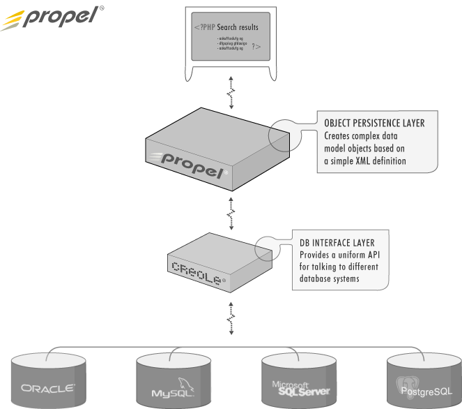

Propel is an object persistence and query service -- which means that Propel provides a system for storing objects to a database and a system for searching for and restoring the objects from the database. Propel enables you to perform complex queries and database manipulations without writing a single SQL clause. Propel makes applications easier to write, easier to deploy, and a lot easier to migrate if ever the need should arise.
Propel can be described as an object-relational mapping, a DAO layer, or an object persistence layer. Propel is a port of Apache Torque. Based on proven approaches developed by the Torque project and optimized for PHP, Propel hopes to provide a smart and comprehensive data management service at minimal performance cost to your PHP application.
For those familiar with O/R patterns, Propel primarily implements the Row Data Gateway pattern, as described by Martin Fowler, for representing the database. To quote Fowler:
A Row Data Gateway gives you objects that look exactly like the record in your record structure but can be accessed with the regular mechanisms of your programming language. All details of data source access are hidden behind this interface.
However, Propel also generates classes for each table which exhibit some of the properties of the Table Data Gateway pattern:
A Table Data Gateway holds all the SQL for accessing a single table or view: selects, inserts, updates, and deletes. Other code calls its methods for all interaction with the database.
In Propel the Table Data Gateway classes are called Peer classes, while the Row Data Gateway classes are called entity or object classes.
As an application, Propel has two main (and now formally separate) components:
The runtime environment provides a layer of database abstraction and encapsulation for business logic rules. The Propel classes represent the model layer of the traditional MVC, designed to encapsulate any data -level validation needed by your application. The diagram below illustrates how Propel exists in relationship to Creole and the underlying databases. (Note that the top-level is meant to embody any PHP application, and may well involve many additional layers).

There are a number of object persistence implementations -- providing different levels of abstraction, some are abstracted to the point where objects may also be persisted to non-SQL backends. Propel is a very literal object persistence layer: the XML data model corresponds very closely to the structure of the database. Entities in Propel are always tables; relationships are specified using foreign keys; and the Propel column types correspond almost directly with database-level (Creole) column types.
What does this mean in practical terms for users of Propel? On one hand it means that Propel is quite easy to learn and also quite flexible -- in that you can be confident when designing your inter-related table structure that it will work as expected in Propel. Performance is also maximized by using a minimally abstract system. On the other hand, because Propel's entities are always tables, it has an efficient yet basic inheritance model -- mapping all subclasses to a single database table. Also, some operations in Propel require additional middle steps -- for example, handling many-to-many relationships requires explicit use of the cross-reference table in your PHP scripts.
While, some elegance is sacrificed for a literal persistence model, we feel that the benefits in learning curve, flexibility, and performance outweigh any drawbacks in this system. The aim with Propel is to provide a tool that greatly increases developer productivity, while still being lightweight enough to be useful in a PHP environment.
There are quite a number of object persistence layers for Java (Torque, Hibernate, Castor, and OJB to name a few); however, there are very few solutions that even provide very basic O/R mapping for PHP. As PHP is being used increasingly in large-scale deployments, O/R tools for PHP are becoming ever more prevalent. Here is a look at some similar projects that currently exist in various stages of development for PHP (some having come into existence after Propel):
In short, we decided to create Propel because we wanted something that was going to make complex database applications significantly easier without sacrificing flexibility. Rather than look at why we didn't like some of these solutions, here's a brief description of how some of these differ. We'll try to keep it fairly object -- and let you make the final value judgments about these other solutions.
ALYOOP
ALYOOP is a simple PHP5 DAO framework. May or may not still be under development.
Some differences:
DB_DataContainer
DB_DataContainer is a PEAR-compliant package that provides a simple DAO framework.
Some differences:
DB_DataObject
DB_DataObject is a PEAR package that does do some basic code generation and has basic support for relationships.
Some differences:
DB_Table
DB_Table is another PEAR package that provides a table-level of DB abstraction.
Some differences:
EasyORM
We did not examine EasyORM in more detail as it is a MySQL-only solution.
Metastorage
Metastorage is probably the most complete of the other solutions, and rather similar to Propel in terms of using XML for the model description and requiring a build phase to create PHP classes.
Some differences:
Propel is really quite simple to use. Basically, you need to define your data model in XML, specify any build properties (e.g. which db you are building for) and then "build" your object model. Building your object model will create SQL definition files and - most importantly- the PHP classes you need to use your database from your application.
This isn't meant as a quickstart guide (that's coming later), but rather as a brief walkthrough of what it means to use Propel.
To start with, here's a very simple example of a data model definition:
<?xml version="1.0" encoding="ISO-8859-1"?>
<database name="bookstore">
<table name="book">
<column name="book_id" type="INTEGER" required="true" primaryKey="true"/>
<column name="title" type="VARCHAR" size="50" required="true" />
</table>
</database>
Building this datamodel will create several PHP classes that you will use to add and find data in the "book" table. Propel will also generate a couple of empty subclasses so that you can customize the behavior without making changes to the generated code (which would get overwritten when you re-generate your object model later).
| Class | Purpose |
|---|---|
| BaseBook, Book | BaseBook represents the base class for a row from the book table. Book is the empty subclass where customizations can be added; queries will return arrays of objects of type Book. |
| BaseBookPeer, BookPeer | The Peer class is a class with only static methods that perform queries and manipulations against the book table. All references must be to BookPeer which is an empty subclass (for customization) of BaseBookPeer. |
| BookMap | This contains a database map for the book table. Rather than having to perform slow metadata queries at runtime (e.g. to know which cols are primary keys, foreign keys, etc.), Propel compiles a map class that can quickly return relevant information about the table structure. |
In your PHP application, you can include and use this new Book class just like any other PHP class. Behind the scenes, Propel will handle all SQL and native database function calls (e.g. mysql_query()).
// example using business objects
$b = new Book();
$b->setTitle("War & Peace");
$b->save();
// "peer" class is static class that handles things like queries
$c = new Criteria();
$c->add(BookPeer::TITLE, "War%", Criteria::LIKE);
$c->setLimit(10);
$books = BookPeer::doSelect($c);
foreach($books as $book) {
print "<br/>" . $book->getTitle();
}
Of course there's a little more involved -- and most databases are a little more complex than our "book" example -- but that gives you a basic idea of how it really is pretty simple to integrate Propel into your PHP application.